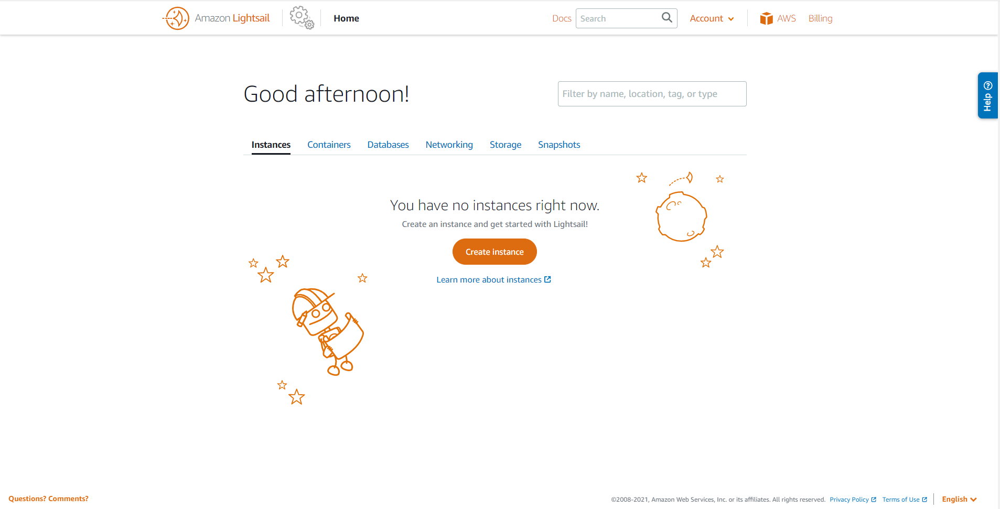
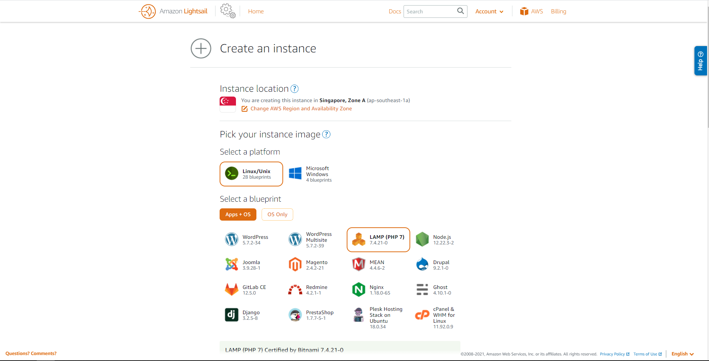
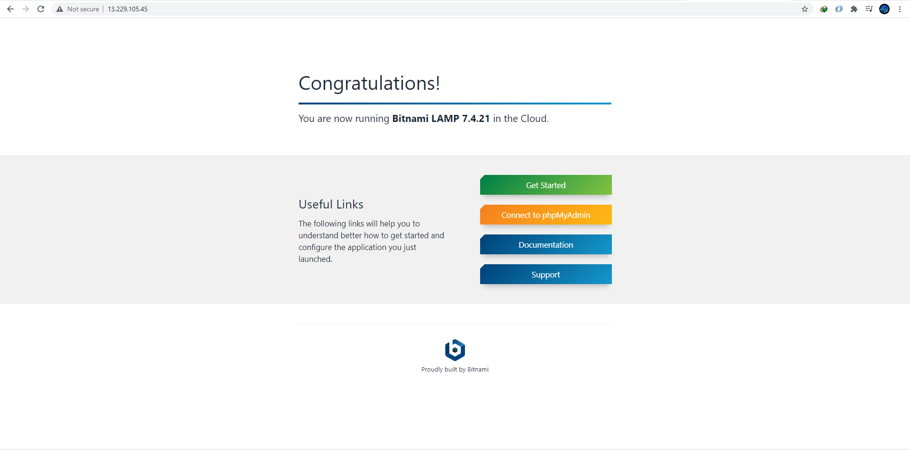
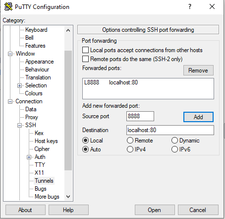
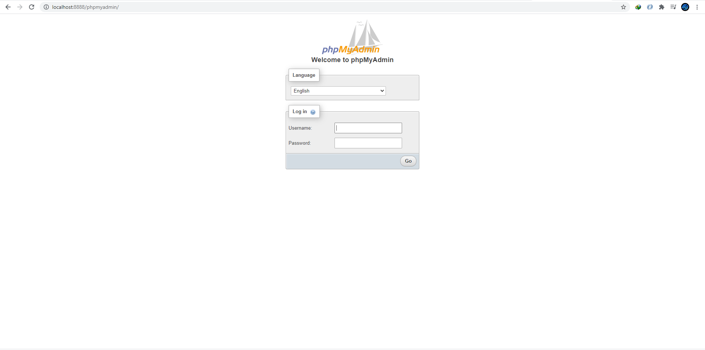
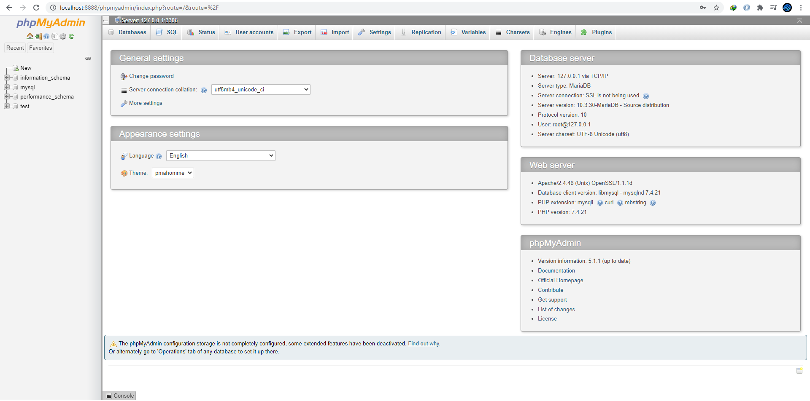

ขั้นแรกให้ไปที่แถบ service และ คลิ๊กเลือกที่ไป lightsail link จะพาไปยังหน้า ดังภาพด้านล่าง จากนั้นให้เลือก Create Instance ได้เลย
ต่อมาให้เลือก ระบบประฏิบัติการณ์ และ blue print ว่าเราต้องการใช้เครื่อง server นี้ทำอะไรซึ่งจะสะดวกกว่า EC2 ด้านบนมาก ในที่นี้จะเลือกเป็นระบบปฏิบัติการแบบ Linux และ blue print เป็น LAMP (PHP7) ซึ่งจะมี Apache MySQL และ phpMyAdmin รวมไว้ให้อยู่แล้วดังภาพด้านล่าง
จากนั้นให้เลื่นมาด้านล่างเพื่อ สร้าง SSH key pair ขึ้นมาในกรณีที่ยังไม่มี ให้เลือก Create new ขึ้นมาใหม่และ download เก็บไว้ หลังจากนั้นให้ตั้งชื่อ Instance ของเราและ เลือก Create Instance ได้เลย จากนั้นให้รอจนกว่า Instance พร้อมใช้งาน จากนั้นให้ตรวจสอบโดยการเปิด browser และ ใส่ IPv4 ของ Instance เข้าไปจะปรากฏหน้าดังรูป
ต่อมาทำการเชื่อมต่อ server โดยใช้ putty นำ key ที่ Download มา generate เป็น private key จากนั้นใช้ putty connect server จากนั้นให้พิมพ์ ls จะเห็น file ชื่อ bitnami_application_password ให้พิมพ์ cat bitnami_application_password เพื่อเปิด file ขึ้นมาจะเห็น password เอาไว้เชื่อต่อกับ mysql จากนั้นพิมพ์ sudo mysql -u root -p
จากนั้นถ้าเราต้องการจะเข้าสู่หน้า phpmyadmin จะปรากฏข้อความว่า “For security reasons, this URL is only accessible using localhost (127.0.0.1) as the hostname.” และจะไม่สามารถเข้าได้ จึงจำเป็นจะต้องใช้ tunnel ผ่าน putty โดยวิธีมีดังนี้
ขั้นตอนที่ 1 ให้เลือก session ของ lightsail ที่ save ไว้ก่อนหน้าแล้วไปที่ SSH->Tunnels ใส่ Source port เป็น 8888 และ Destination เป็น localhost:80 กด Add เมื่อเสร็จแล้วกด open และลองเข้าไปเช็คดูที่ web browser โดยพิมพ์ localhost:8888/phpmyadmin จะปรากฏดังรูปด้านล่าง
ขั้นตอนที่ 2 ให้ log in ด้วย user: root และใส่ password ที่ได้มาตอนแรก ถ้า log in สำเร็จจะปรากฏหน้าดังรูปด้านล่าง เป็นอันเสร็จสิ้นการ review Light sail
